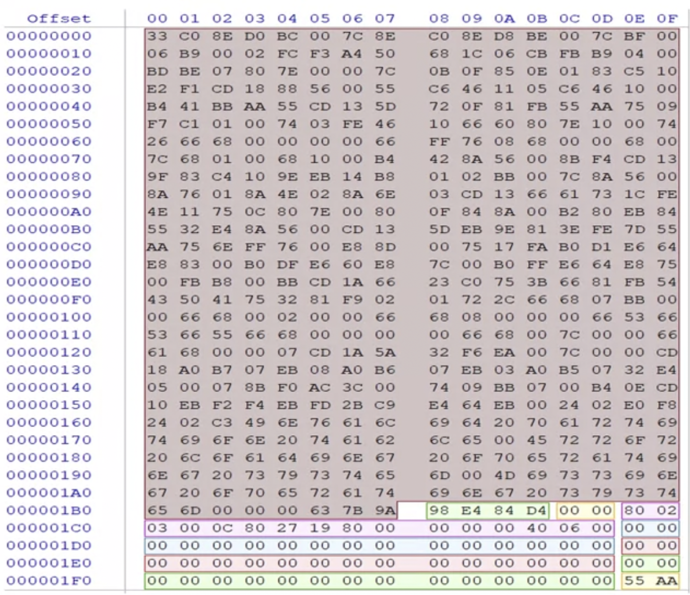
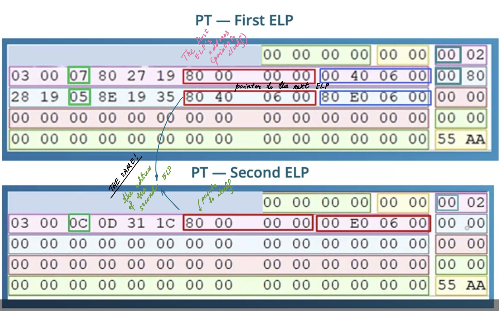

Stands for Master Boot Record.
Primary partitions (bootable). Can have at most 4 bootable partitions, since it’s limited to 4 partition entries in parition table, each entry 16 bytes in length. 4 bytes for their size, hence max value in hex is 0xFF FF FF FF, hence max size of a partition is 2 Tb. It starts at sector 0, it’s 512 bytes long (one sector) and it ends with 0x55 0xAA.
Contains:
- Boot code (selected large area on the picture below, from
0x0to0x1B7). More about boot code and its disassembly can be read here. - Disk signature (following the boot code, highligted in green followed by two zero values). In the example below, at offset
0x1B8:0x98 E4 84 D4. - Partition table (four entries: pink, blue, red and green, representing each partition on the disk). Each entry:
0x1BEthe first byte tells whether it’s bootable (0x80- yes,0x0- no). The first partition (pink) in the below example is bootable.0x1BF-1C0. These three bytes represent start head, sector, cylinder numbers in legacy CHS sector addressing scheme. In the example below:0x02 03 00.0x1C2. This single byte for partition type entry (0xCin the example below). Can be NTFS, FAT etc. Common values:0x04FAT16 (up to 32Mb),0x05DOS Extended (CHS),0x06FAT16 (up to 2Gb),0x07NTFS,0x0BFAT32,0x0CFAT32x (LBA),0x0F(Extended partition, LBA),0x83Linux.0x1C3-0x1C5. These three bytes represent end head, sector, cylinder numbers in legacy CHS sector addressing. In the example below:0x80 27 19.0x1C6. These four bytes point to the location (the first sector) of the first partition on disk (0x80 00 00 00). ❗️Relative to the start of the physical drive.0x1CA. The last four - the size of the partition in sectors (0x00 40 06 00)
0x55 AA- the end signature. Indicated the end of the MBR.

🧪 “We can look at offset
0x440to see which volumes are maped to which drive letter in the registry”.
Only one partion can be bootable. Only one can be an extended logical partition. Mind that an extended logical partition cannot be bootable ❗️
What is the extended logical partition? Since MBR is limited to 4 partitions, to be able to create more, this notion was invented. Extended logical partition (ELP) starts with a partition table. Partition addresses are relative to its first sector. The first entry in the partition table is pointing to itself, the second - to the next logical partition. At physical sector 0 of the ELP we have a partition table that will point to the next partition. This partition table (PT) will have 2 entries: pointer to itself and to the next ELP.

In the example above, there are two ELPs. In the PT of the first ELP there are two entries. The first one starts at 0x80 00 00 00 and is 0x 00 40 06 00 sectors long. This entry shows the location of the ELP itself (where it starts and how log it is). The second one is at 0x80 40 06 00 and is 0x80 E0 06 00 sectors long. This entry is the same as the first entry of the second ELP (second picture), which shows the start location and the size of the second ELP. So, since the second ELP is the last one, it only points to itself. If there were the third ELP, the second one would have the second entry pointing right to it. ❗️These location addresses are relative to the ELP start, unlike the normal partition types which are relative to the physical drive start!
References
[1] InfoSec Institute Course, Coursera (all pictures are from the course or from the lab that I followed when watching the course). Definitely the one worth buying. Believe me.